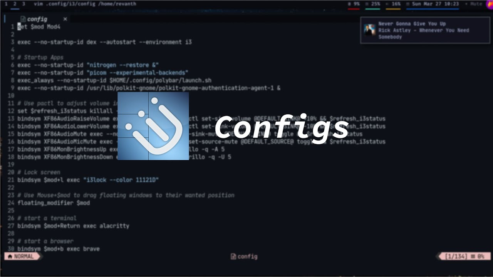

Editors . 14 Jun 2022
LunarVim is an extensible, and fast IDE layer for Neovim
Not long ago I decided to improve the loading times of my website. It already loads pretty fast, but I knew
there was still room for improvement and one of them was CSS loading. I will walk you through the process
and
show you how you can improve your load times as well.

DE & WM's . 27 Mar 2022
My i3wm setup
The CSS Grid Layout Module offers a grid-based layout system, with rows and columns, making it easier to
design web pages without having to use floats and positioning.
Read Full
Editors . 7 Mar 2022
New Neovim Configs!
Colors play a vital role in making a web page usable or not. In CSS, we can control the foreground and
background color of an element with the color and background properties.
Read Full